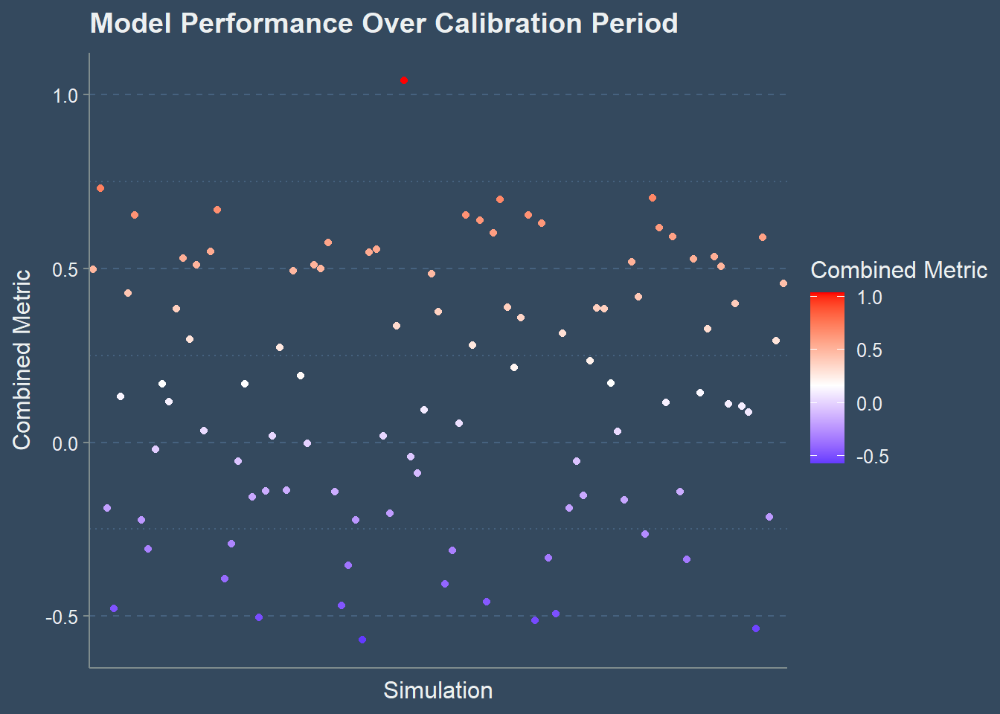

Warning: package 'ggplot2' was built under R version 4.2.3
Warning: package 'tibble' was built under R version 4.2.3
Warning: package 'dplyr' was built under R version 4.2.3
── Attaching core tidyverse packages ──────────────────────── tidyverse 2.0.0 ──
✔ dplyr 1.1.2 ✔ readr 2.1.4
✔ forcats 1.0.0 ✔ stringr 1.5.0
✔ ggplot2 3.4.2 ✔ tibble 3.2.1
✔ lubridate 1.9.2 ✔ tidyr 1.3.0
✔ purrr 1.0.1
── Conflicts ────────────────────────────────────────── tidyverse_conflicts() ──
✖ dplyr::filter() masks stats::filter()
✖ dplyr::lag() masks stats::lag()
ℹ Use the conflicted package (<http://conflicted.r-lib.org/>) to force all conflicts to become errors
Warning: package 'flextable' was built under R version 4.2.3
Attaching package: 'flextable'
The following object is masked from 'package:purrr':
compose
here() starts at C:/Users/bsf31/Documents/meds/ESM232_Examples
Assignment
Part 1 from above: R function that codes a metric for performance evaluation
must be a combination of at least two performance measures
include some comments that explain ‘why’ this metric
This combined metric can be used to evaluate the model performance considering both the discrepancy between the observed and modeled flow values as well as the linear relationship between them.
Here’s the reasoning behind this metric and an overview of the steps:
Transformed Difference: This measure captures the difference between the observed and modeled flow values at the annual scale. By calculating the difference between the sum of observed and modeled values for each water year, we can assess how well the model is reproducing the overall annual flow. The difference is then normalized by the standard deviation of the differences to account for the variations in the dataset and to have a comparable value across different datasets.
Correlation Coefficient: This measure captures the linear relationship between the observed and modeled flow values. A high correlation coefficient indicates that the model is able to reproduce the overall pattern of the flow values throughout the dataset.
Combining the measures: The transformed difference and correlation coefficient are combined by calculating their arithmetic mean. This provides a single value representing the model’s performance, considering both the discrepancy between observed and modeled flow values and their linear relationship.
In summary, the combined_metric function evaluates the performance of a hydrologic model by considering both the difference between the observed and modeled flow values at the annual scale and the linear relationship between them. This combined metric can be used to compare the performance of different models and assess how well they reproduce the flow values in a given dataset.
combined_metric <-function(data) { sager_differences <- data |>group_by(wy) |>summarize(difference_obs_mod =sum(model) -sum(obs))# Calculate the mean difference mean_difference <-mean(sager_differences$difference_obs_mod)# Calculate the standard deviation of the differences std_dev_difference <-sd(sager_differences$difference_obs_mod)# Compute the transformed difference (e.g., normalize by the standard deviation) sager_differences <- sager_differences |>mutate(transformed_diff = difference_obs_mod / std_dev_difference)# Compute the correlation coefficient between obs and model correlation_coefficient <-cor(data$obs, data$model)# Combine the transformed difference and the correlation coefficient combined_metric <- (mean(sager_differences$transformed_diff) + correlation_coefficient) /2 combined_metric}
2
R markdown that does the following steps (with lots of documentation of the work flow):
Part 2 from above:
Apply your performance function to a subset of the Sagehen data set (with multiple simulations) that you want to use for calibration
We perform a split-sample calibration using the year 1984 as the calibration threshold. Then find the best parameter set and graph the mean August streamflow for the best parameter set. Finally compute the performance of the model using the best parameter set in pre and post-calibration periods.
# Read and organize the datasager =read.table(here('data',"sager.txt"), header=T)head(sager)
# add datesager = sager %>%mutate(date =paste(day,month,year, sep="/"))sager$date =as.Date(sager$date,"%d/%m/%Y")# Read and organize the datasagerm <-read.table(here('data',"sagerm.txt"), header = T)nsim <-ncol(sagerm)snames <-sprintf("S%d", seq(from =1, to = nsim))colnames(sagerm) <- snamessagerm$date <- sager$datesagerm$month <- sager$monthsagerm$year <- sager$yearsagerm$day <- sager$daysagerm$wy <- sager$wysagerm <-left_join(sagerm, sager[, c("obs", "date")], by =c("date"))# Split-sample calibrationcalibration_data <-subset(sagerm, wy <1984)
# Define a function to compute the combined_metric for each simulationcombined_metric_for_simulation <-function(sname, data, obs) { model_data <- data[[sname]] wy_data <- data$wy cm <-combined_metric(data.frame(obs = obs, model = model_data, wy = wy_data))return(data.frame(sim = sname, combined_metric = cm))}# Compute the combined_metric for each simulation during the calibration periodres <-map_dfr(snames, combined_metric_for_simulation, data = calibration_data, obs = calibration_data$obs)ft <-flextable(head(res))theme_vader(ft)
sim
combined_metric
S1
0.49701896
S2
0.52936977
S3
-0.50282226
S4
-0.14164949
S5
-0.04141438
S6
-0.45896335
# Find the best and worst parameter setsbest_parameter <- res %>%slice_max(combined_metric) |>mutate(parameter_type ='best', .before = sim)worst_parameter <- res %>%slice_min(combined_metric) |>mutate(parameter_type ='worst', .before = sim)params <-bind_rows(best_parameter,worst_parameter) |>flextable()theme_vader(params)
parameter_type
sim
combined_metric
best
S49
1.0406890
worst
S43
-0.5680795
ggthemr('flat dark', type ='outer', layout ="scientific")
# Compare the performance of the best and worst parameter setscomparison_data <- sagerm %>%select(c(best_parameter$sim, worst_parameter$sim), date, obs, month, day, year, wy)comparison_data_mwy <- comparison_data %>%select(-c(day, date, year)) %>%group_by(month, wy) %>%summarize(across(everything(), mean))
`summarise()` has grouped output by 'month'. You can override using the
`.groups` argument.
2. Summarize the performance over the calibration period in 1-2 graphs; you can decide what is useful
# Apply the best parameter set to the validation databest_sim <- best_parameter$simvalidation_data <-subset(sagerm, wy >=1984)validation_data_adjusted <- validation_data %>%mutate(model =!!sym(best_sim))# Plot the mean August streamflow for the best parameter setmean_august_streamflow <- validation_data_adjusted %>%filter(month ==8) %>%group_by(year) %>%summarize(mean_obs =mean(obs),mean_model =mean(model))
ggplot(mean_august_streamflow, aes(x = year)) +geom_line(aes(y = mean_obs, color ="Observed")) +geom_line(aes(y = mean_model, color ="Adjusted Model"))+labs(title ="Mean August Streamflow",x ="Year",y ="Streamflow",color ="Data")
# Plot the performance over the calibration periodggplot(res, aes(x = sim, y = combined_metric, color = combined_metric)) +geom_point() +scale_color_gradient2(low ="blue", mid ="white", high ="red", midpoint =median(res$combined_metric)) +scale_x_discrete(breaks =seq(from =1, to =length(snames), by =10), labels = snames[seq(from =1, to =length(snames), by =10)]) +labs(title ="Model Performance Over Calibration Period",x ="Simulation",y ="Combined Metric",color ="Combined Metric")

# Compute the performance of the model using the best parameter set in pre and post-calibration periodspre_calibration_performance <-combined_metric(calibration_data %>%mutate(model =!!sym(best_sim)))post_calibration_performance <-combined_metric(validation_data_adjusted)performance_change <- post_calibration_performance - pre_calibration_performanceperformance_change
[1] -0.09090848
3. Record your 'best' and 'worst' parameter set in this [spreadsheet](https://docs.google.com/spreadsheets/d/1444ILTaP6pcqvudQopZZVP2WDDJ1NNgXX6sdPdwdbXE/edit#gid=0) and in your Rmd